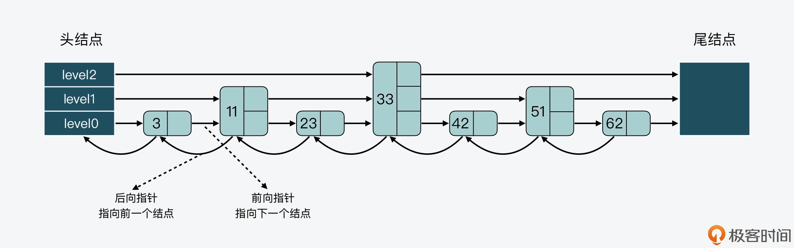
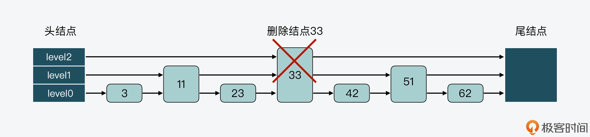

- 00 开篇词 阅读Redis源码能给你带来什么？.md
- 01 带你快速攻略Redis源码的整体架构.md
- 02 键值对中字符串的实现，用char还是结构体？.md
- 03 如何实现一个性能优异的Hash表？.md
- 04 内存友好的数据结构该如何细化设计？.md
- 05 有序集合为何能同时支持点查询和范围查询？.md
- 06 从ziplist到quicklist，再到listpack的启发.md
- 07 为什么Stream使用了Radix Tree？.md
- 08 Redis server启动后会做哪些操作？.md
- 09 Redis事件驱动框架（上）：何时使用select、poll、epoll？.md
- 10 Redis事件驱动框架（中）：Redis实现了Reactor模型吗？.md
- 11 Redis事件驱动框架（下）：Redis有哪些事件？.md
- 12 Redis真的是单线程吗？.md
- 13 Redis 6.0多IO线程的效率提高了吗？.md
- 14 从代码实现看分布式锁的原子性保证.md
- 15 为什么LRU算法原理和代码实现不一样？.md
- 16 LFU算法和其他算法相比有优势吗？.md
- 17 Lazy Free会影响缓存替换吗？.md
- 18 如何生成和解读RDB文件？.md
- 19 AOF重写（上）：触发时机与重写的影响.md
- 20 AOF重写（下）：重写时的新写操作记录在哪里？.md
- 21 主从复制：基于状态机的设计与实现.md
- 22 哨兵也和Redis实例一样初始化吗？.md
- 23 从哨兵Leader选举学习Raft协议实现（上）.md
- 24 从哨兵Leader选举学习Raft协议实现（下）.md
- 25 PubSub在主从故障切换时是如何发挥作用的？.md
- 26 从Ping-Pong消息学习Gossip协议的实现.md
- 27 从MOVED、ASK看集群节点如何处理命令？.md
- 28 Redis Cluster数据迁移会阻塞吗？.md
- 29 如何正确实现循环缓冲区？.md
- 30 如何在系统中实现延迟监控？.md
- 31 从Module的实现学习动态扩展功能.md
- 32 如何在一个系统中实现单元测试？.md
- 结束语 Redis源码阅读，让我们从新开始.md
05 有序集合为何能同时支持点查询和范围查询？
有序集合（Sorted Set）是 Redis 中一种重要的数据类型，它本身是集合类型，同时也可以支持集合中的元素带有权重，并按权重排序。
而曾经就有一位从事 Redis 开发的同学问我：为什么 Sorted Set 能同时提供以下两种操作接口，以及它们的复杂度分别是 O(logN)+M 和 O(1) 呢？
- ZRANGEBYSCORE：按照元素权重返回一个范围内的元素。
- ZSCORE：返回某个元素的权重值。
实际上，这个问题背后的本质是：为什么 Sorted Set 既能支持高效的范围查询，同时还能以 O(1) 复杂度获取元素权重值？
这其实就和 Sorted Set 底层的设计实现有关了。Sorted Set 能支持范围查询，这是因为它的核心数据结构设计采用了跳表，而它又能以常数复杂度获取元素权重，这是因为它同时采用了哈希表进行索引。
那么，你是不是很好奇，Sorted Set 是如何把这两种数据结构结合在一起的？它们又是如何进行协作的呢？今天这节课，我就来给你介绍下 Sorted Set 采用的双索引的设计思想和实现。理解和掌握这种双索引的设计思想，对于我们实现数据库系统是具有非常重要的参考价值的。
好，接下来，我们就先来看看 Sorted Set 的基本结构。
Sorted Set 基本结构
要想了解 Sorted Set 的结构，就需要阅读它的代码文件。这里你需要注意的是，在 Redis 源码中，Sorted Set 的代码文件和其他数据类型不太一样，它并不像哈希表的 dict.c/dict.h，或是压缩列表的 ziplist.c/ziplist.h，具有专门的数据结构实现和定义文件。
Sorted Set 的实现代码在t_zset.c文件中，包括 Sorted Set 的各种操作实现，同时 Sorted Set 相关的结构定义在server.h文件中。如果你想要了解学习 Sorted Set 的模块和操作，注意要从 t_zset.c 和 server.h 这两个文件中查找。
好，在知道了 Sorted Set 所在的代码文件之后，我们可以先来看下它的结构定义。Sorted Set 结构体的名称为 zset，其中包含了两个成员，分别是哈希表 dict 和跳表 zsl，如下所示。
typedef struct zset {
dict *dict;
zskiplist *zsl;
} zset;
在这节课一开始，我就说过 Sorted Set 这种同时采用跳表和哈希表两个索引结构的设计思想，是非常值得学习的。因为这种设计思想充分利用了跳表高效支持范围查询（如 ZRANGEBYSCORE 操作），以及哈希表高效支持单点查询（如 ZSCORE 操作）的特征。这样一来，我们就可以在一个数据结构中，同时高效支持范围查询和单点查询，这是单一索引结构比较难达到的效果。
不过，既然 Sorted Set 采用了跳表和哈希表两种索引结构来组织数据，我们在实现 Sorted Set 时就会面临以下两个问题：
- 跳表或是哈希表中，各自保存了什么样的数据？
- 跳表和哈希表保存的数据是如何保持一致的？
因为我已经在【第 3 讲】中给你介绍了 Redis 中哈希表的实现思路，所以接下来，我主要是给你介绍下跳表的设计和实现。通过学习跳表，你可以了解到跳表中保存的数据，以及跳表的常见操作。然后，我再带你来探究下 Sorted Set 如何将哈希表和跳表组合起来使用的，以及这两个索引结构中的数据是如何保持一致的。
跳表的设计与实现
首先，我们来了解下什么是跳表（skiplist）。
跳表其实是一种多层的有序链表。在课程中，为了便于说明，我把跳表中的层次从低到高排个序，最底下一层称为 level0，依次往上是 level1、level2 等。
下图展示的是一个 3 层的跳表。其中，头结点中包含了三个指针，分别作为 leve0 到 level2 上的头指针。

可以看到，在 level 0 上一共有 7 个结点，分别是 3、11、23、33、42、51、62，这些结点会通过指针连接起来，同时头结点中的 level0 指针会指向结点 3。然后，在这 7 个结点中，结点 11、33 和 51 又都包含了一个指针，同样也依次连接起来，且头结点的 level 1 指针会指向结点 11。这样一来，这 3 个结点就组成了 level 1 上的所有结点。
最后，结点 33 中还包含了一个指针，这个指针会指向尾结点，同时，头结点的 level 2 指针会指向结点 33，这就形成了 level 2，只不过 level 2 上只有 1 个结点 33。
好，在对跳表有了直观印象后，我们再来看看跳表实现的具体数据结构。
跳表数据结构
我们先来看下跳表结点的结构定义，如下所示。
typedef struct zskiplistNode {
//Sorted Set中的元素
sds ele;
//元素权重值
double score;
//后向指针
struct zskiplistNode *backward;
//节点的level数组，保存每层上的前向指针和跨度
struct zskiplistLevel {
struct zskiplistNode *forward;
unsigned long span;
} level[];
} zskiplistNode;
首先，因为 Sorted Set 中既要保存元素，也要保存元素的权重，所以对应到跳表结点的结构定义中，就对应了 sds 类型的变量 ele，以及 double 类型的变量 score。此外，为了便于从跳表的尾结点进行倒序查找，每个跳表结点中还保存了一个后向指针（*backward），指向该结点的前一个结点。
然后，因为跳表是一个多层的有序链表，每一层也是由多个结点通过指针连接起来的。因此在跳表结点的结构定义中，还包含了一个 zskiplistLevel 结构体类型的 level 数组。
level 数组中的每一个元素对应了一个 zskiplistLevel 结构体，也对应了跳表的一层。而 zskiplistLevel 结构体定义了一个指向下一结点的前向指针（forward），这就使得结点可以在某一层上和后续结点连接起来。同时，zskiplistLevel 结构体中还定义了，这是用来记录结点在某一层上的跨度forward指针和该指针指向的结点之间，跨越了 level0 上的几个结点。
我们来看下面这张图，其中就展示了 33 结点的 level 数组和跨度情况。可以看到，33 结点的 level 数组有三个元素，分别对应了三层 level 上的指针。此外，在 level 数组中，level 2、level1 和 level 0 的跨度 span 值依次是 3、2、1。

最后，因为跳表中的结点都是按序排列的，所以，对于跳表中的某个结点，我们可以把从头结点到该结点的查询路径上，各个结点在所查询层次上的*forward指针跨度，做一个累加。这个累加值就可以用来计算该结点在整个跳表中的顺序，另外这个结构特点还可以用来实现 Sorted Set 的 rank 操作，比如 ZRANK、ZREVRANK 等。
好，了解了跳表结点的定义后，我们可以来看看跳表的定义。在跳表的结构中，定义了跳表的头结点和尾结点、跳表的长度，以及跳表的最大层数，如下所示。
typedef struct zskiplist {
struct zskiplistNode *header, *tail;
unsigned long length;
int level;
} zskiplist;
因为跳表的每个结点都是通过指针连接起来的，所以我们在使用跳表时，只需要从跳表结构体中获得头结点或尾结点，就可以通过结点指针访问到跳表中的各个结点。
那么，当我们在 Sorted Set 中查找元素时，就对应到了 Redis 在跳表中查找结点，而此时，查询代码是否需要像查询常规链表那样，逐一顺序查询比较链表中的每个结点呢？
其实是不用的，因为这里的查询代码，可以使用跳表结点中的 level 数组来加速查询。
跳表结点查询
事实上，当查询一个结点时，跳表会先从头结点的最高层开始，查找下一个结点。而由于跳表结点同时保存了元素和权重，所以跳表在比较结点时，相应地有两个判断条件：
- 当查找到的结点保存的元素权重，比要查找的权重小时，跳表就会继续访问该层上的下一个结点。
- 当查找到的结点保存的元素权重，等于要查找的权重时，跳表会再检查该结点保存的 SDS 类型数据，是否比要查找的 SDS 数据小。如果结点数据小于要查找的数据时，跳表仍然会继续访问该层上的下一个结点。
但是，当上述两个条件都不满足时，跳表就会用到当前查找到的结点的 level 数组了。跳表会使用当前结点 level 数组里的下一层指针，然后沿着下一层指针继续查找，这就相当于跳到了下一层接着查找。
这部分的代码逻辑如下所示，因为在跳表中进行查找、插入、更新或删除操作时，都需要用到查询的功能，你可以重点了解下。
//获取跳表的表头
x = zsl->header;
//从最大层数开始逐一遍历
for (i = zsl->level-1; i >= 0; i--) {
...
while (x->level[i].forward && (x->level[i].forward->score < score || (x->level[i].forward->score == score
&& sdscmp(x->level[i].forward->ele,ele) < 0))) {
...
x = x->level[i].forward;
}
...
}
跳表结点层数设置
这样一来，有了 level 数组之后，一个跳表结点就可以在多层上被访问到了。而一个结点的 level 数组的层数也就决定了，该结点可以在几层上被访问到。
所以，当我们要决定结点层数时，实际上是要决定 level 数组具体有几层。
一种设计方法是，让每一层上的结点数约是下一层上结点数的一半，就像下面这张图展示的。第 0 层上的结点数是 7，第 1 层上的结点数是 3，约是第 0 层上结点数的一半。而第 2 层上的结点就 33 一个，约是第 1 层结点数的一半。

这种设计方法带来的好处是，当跳表从最高层开始进行查找时，由于每一层结点数都约是下一层结点数的一半，这种查找过程就类似于二分查找，查找复杂度可以降低到 O(logN)。
但这种设计方法也会带来负面影响，那就是为了维持相邻两层上结点数的比例为 2:1，一旦有新的结点插入或是有结点被删除，那么插入或删除处的结点，及其后续结点的层数都需要进行调整，而这样就带来了额外的开销。
我先来给你举个例子，看下不维持结点数比例的影响，这样虽然可以不调整层数，但是会增加查询复杂度。
首先，假设当前跳表有 3 个结点，其数值分别是 3、11、23，如下图所示。

接着，假设现在要插入一个结点 15，如果我们不调整其他结点的层数，而是直接插入结点 15 的话，那么插入后，跳表 level 0 和 level 1 两层上的结点数比例就变成了为 4:1，如下图所示。

而假设我们持续插入多个结点，但是仍然不调整其他结点的层数，这样一来，level0 上的结点数就会越来越多，如下图所示。

相应的，如果我们要查找大于 11 的结点，就需要在 level 0 的结点中依次顺序查找，复杂度就是 O(N) 了。所以，为了降低查询复杂度，我们就需要维持相邻层结点数间的关系。
好，接下来，我们再来看下维持相邻层结点数为 2:1 时的影响。
比如，我们可以把结点 23 的 level 数组中增加一层指针，如下图所示。这样一来，level 0 和 level 1 上的结点数就维持在了 2:1。但相应的代价就是，我们也需要给 level 数组重新分配空间，以便增加一层指针。

类似的，如果我们要在有 7 个结点的跳表中删除结点 33，那么结点 33 后面的所有结点都要进行调整：

调整后的跳表如下图所示。你可以看到，结点 42 和 62 都要新增 level 数组空间，这样能分别保存 3 层的指针和 2 层的指针，而结点 51 的 level 数组则需要减少一层。也就是说，这样的调整会带来额外的操作开销。

因此，为了避免上述问题，跳表在创建结点时，采用的是另一种设计方法，即随机生成每个结点的层数。此时，相邻两层链表上的结点数并不需要维持在严格的 2:1 关系。这样一来，当新插入一个结点时，只需要修改前后结点的指针，而其他结点的层数就不需要随之改变了，这就降低了插入操作的复杂度。
在 Redis 源码中，跳表结点层数是由 zslRandomLevel 函数决定。zslRandomLevel 函数会把层数初始化为 1，这也是结点的最小层数。然后，该函数会生成随机数，如果随机数的值小于 ZSKIPLIST_P（指跳表结点增加层数的概率，值为 0.25），那么层数就增加 1 层。因为随机数取值到[0,0.25) 范围内的概率不超过 25%，所以这也就表明了，每增加一层的概率不超过 25%。下面的代码展示了 zslRandomLevel 函数的执行逻辑，你可以看下。
#define ZSKIPLIST_MAXLEVEL 64 //最大层数为64
#define ZSKIPLIST_P 0.25 //随机数的值为0.25
int zslRandomLevel(void) {
//初始化层为1
int level = 1;
while ((random()&0xFFFF) < (ZSKIPLIST_P * 0xFFFF))
level += 1;
return (level<ZSKIPLIST_MAXLEVEL) ? level : ZSKIPLIST_MAXLEVEL;
}
好，现在我们就了解了跳表的基本结构、查询方式和结点层数设置方法，那么下面我们接着来学习下，Sorted Set 中是如何将跳表和哈希表组合起来使用的，以及是如何保持这两个索引结构中的数据是一致的。
哈希表和跳表的组合使用
其实，哈希表和跳表的组合使用并不复杂。
首先，我们从刚才介绍的 Sorted Set 结构体中可以看到，Sorted Set 中已经同时包含了这两种索引结构，这就是组合使用两者的第一步。然后，我们还可以在 Sorted Set 的创建代码（t_zset.c文件）中，进一步看到跳表和哈希表被相继创建。
当创建一个 zset 时，代码中会相继调用 dictCreate 函数创建 zset 中的哈希表，以及调用 zslCreate 函数创建跳表，如下所示。
zs = zmalloc(sizeof(*zs));
zs->dict = dictCreate(&zsetDictType,NULL);
zs->zsl = zslCreate();
这样，在 Sorted Set 中同时有了这两个索引结构以后，接下来，我们要想组合使用它们，就需要保持这两个索引结构中的数据一致了。简单来说，这就需要我们在往跳表中插入数据时，同时也向哈希表中插入数据。
而这种保持两个索引结构一致的做法其实也不难，当往 Sorted Set 中插入数据时，zsetAdd 函数就会被调用。所以，我们可以通过阅读 Sorted Set 的元素添加函数 zsetAdd 了解到。下面我们就来分析一下 zsetAdd 函数的执行过程。
**首先，zsetAdd 函数会判定 Sorted Set 采用的是 ziplist 还是 skiplist 的编码方式。**zsetAdd 函数会判定 Sorted Set 采用的是 ziplist 还是 skiplist 的编码方式。
注意，在不同编码方式下，zsetAdd 函数的执行逻辑也有所区别。这一讲我们重点关注的是 skiplist 的编码方式，所以接下来，我们就主要来看看当采用 skiplist 编码方式时，zsetAdd 函数的逻辑是什么样的。
zsetAdd 函数会先使用哈希表的 dictFind 函数，查找要插入的元素是否存在。如果不存在，就直接调用跳表元素插入函数 zslInsert 和哈希表元素插入函数 dictAdd，将新元素分别插入到跳表和哈希表中。
这里你需要注意的是，Redis 并没有把哈希表的操作嵌入到跳表本身的操作函数中，而是在 zsetAdd 函数中依次执行以上两个函数。这样设计的好处是保持了跳表和哈希表两者操作的独立性。
- 然后，如果 zsetAdd 函数通过 dictFind 函数发现要插入的元素已经存在，那么 zsetAdd 函数会判断是否要增加元素的权重值。
如果权重值发生了变化，zsetAdd 函数就会调用 zslUpdateScore 函数，更新跳表中的元素权重值。紧接着，zsetAdd 函数会把哈希表中该元素（对应哈希表中的 key）的 value 指向跳表结点中的权重值，这样一来，哈希表中元素的权重值就可以保持最新值了。
下面的代码显示了 zsetAdd 函数的执行流程，你可以看下。
//如果采用ziplist编码方式时，zsetAdd函数的处理逻辑
if (zobj->encoding == OBJ_ENCODING_ZIPLIST) {
...
}
//如果采用skiplist编码方式时，zsetAdd函数的处理逻辑
else if (zobj->encoding == OBJ_ENCODING_SKIPLIST) {
zset *zs = zobj->ptr;
zskiplistNode *znode;
dictEntry *de;
//从哈希表中查询新增元素
de = dictFind(zs->dict,ele);
//如果能查询到该元素
if (de != NULL) {
/* NX? Return, same element already exists. */
if (nx) {
*flags |= ZADD_NOP;
return 1;
}
//从哈希表中查询元素的权重
curscore = *(double*)dictGetVal(de);
//如果要更新元素权重值
if (incr) {
//更新权重值
...
}
//如果权重发生变化了
if (score != curscore) {
//更新跳表结点
znode = zslUpdateScore(zs->zsl,curscore,ele,score);
//让哈希表元素的值指向跳表结点的权重
dictGetVal(de) = &znode->score;
...
}
return 1;
}
//如果新元素不存在
else if (!xx) {
ele = sdsdup(ele);
//新插入跳表结点
znode = zslInsert(zs->zsl,score,ele);
//新插入哈希表元素
serverAssert(dictAdd(zs->dict,ele,&znode->score) == DICT_OK);
...
return 1;
}
..
总之，你可以记住的是，Sorted Set 先是通过在它的数据结构中同时定义了跳表和哈希表，来实现同时使用这两种索引结构。然后，Sorted Set 在执行数据插入或是数据更新的过程中，会依次在跳表和哈希表中插入或更新相应的数据，从而保证了跳表和哈希表中记录的信息一致。
这样一来，Sorted Set 既可以使用跳表支持数据的范围查询，还能使用哈希表支持根据元素直接查询它的权重。
小结
这节课，我给你介绍了 Sorted Set 数据类型的底层实现。Sorted Set 为了能同时支持按照权重的范围查询，以及针对元素权重的单点查询，在底层数据结构上设计了组合使用跳表和哈希表的方法。
跳表是一个多层的有序链表，在跳表中进行查询操作时，查询代码可以从最高层开始查询。层数越高，结点数越少，同时高层结点的跨度会比较大。因此，在高层查询结点时，查询一个结点可能就已经查到了链表的中间位置了。
这样一来，跳表就会先查高层，如果高层直接查到了等于待查元素的结点，那么就可以直接返回。如果查到第一个大于待查元素的结点后，就转向下一层查询。下层上的结点数多于上层，所以这样可以在更多的结点中进一步查找待查元素是否存在。
跳表的这种设计方法就可以节省查询开销，同时，跳表设计采用随机的方法来确定每个结点的层数，这样就可以避免新增结点时，引起结点连锁更新问题。
此外，Sorted Set 中还将元素保存在了哈希表中，作为哈希表的 key，同时将 value 指向元素在跳表中的权重。使用了哈希表后，Sorted Set 可以通过哈希计算直接查找到某个元素及其权重值，相较于通过跳表查找单个元素，使用哈希表就有效提升了查询效率。
总之，组合使用两种索引结构来对数据进行管理，比如 Sorted Set 中组合使用跳表和哈希表，这是一个很好的设计思路，希望你也能应用在日常的系统开发中。
每课一问
在使用跳表和哈希表相结合的双索引机制时，在获得高效范围查询和单点查询的同时，你能想到这种双索引机制有哪些不足之处吗？
© 2019 - 2023 Liangliang Lee. Powered by Vert.x and hexo-theme-book.